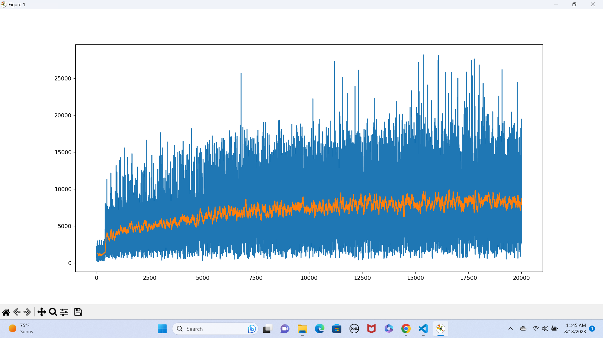

Reinforcement learning · Neural networks · Game environments
Teaching an agent to play 2048.
An end-to-end actor–critic project: implement the game, design a spatial representation of the board, train policy and value networks, and watch the learned agent reach the 2048 tile.
Why 2048?
Every move changes what will be possible later.
2048 has only four actions—left, right, up, and down—but choosing well requires more than collecting the largest immediate merge. A move rearranges the whole board, a new tile appears at random, and a locally rewarding choice can destroy the structure needed to survive many turns later.
That makes the game a compact reinforcement-learning problem. The agent must learn a policy under randomness, delayed consequences, a changing set of legal moves, and an enormous number of possible board configurations.
The project begins below the learning algorithm: it implements the game rules, transition function, rewards, terminal condition, and feature encodings from scratch.
The learning system
One network chooses. Another judges.
The agent uses an advantage actor–critic design. Its policy learns which direction to move; its value model estimates how promising the current board is.
Each tile is encoded by its power of two, producing an 11-channel 4×4 representation that preserves the board’s spatial structure.
A convolutional network outputs probabilities for the four directions and samples the agent’s next action.
A second convolutional network predicts return and supplies the advantage signal used to improve the policy.
Moves that leave the board unchanged receive effectively zero probability, so the agent samples only valid actions.
Merged tile values provide the learning signal, aligning return with the familiar score accumulated during a game.
Policy and value networks are saved independently, allowing trained checkpoints to be evaluated and visualized later.
Training trace
Learning is noisy, so the trend matters.
Individual games vary because new tiles appear randomly. The recorded experiment plots episode reward together with a 50-episode rolling mean, making longer-term improvement easier to distinguish from lucky or unlucky games.

Learned behavior
The agent reaches 2048.
A saved policy was loaded into a Pygame visualizer and allowed to play complete games. The recording below follows one such run through the creation of the 2048 tile.

Broader workspace
From fundamentals to applied agents.
The repository also contains CartPole actor–critic implementations, neural-network components written from scratch, a digit classifier, and experimental trading environments. Together they document a progression from implementing the mechanics of neural networks and RL algorithms to assembling complete agents with modern frameworks.
The 2048 agent is the clearest case study because the environment, representation, learning rule, saved models, and visible outcome all live in one project.